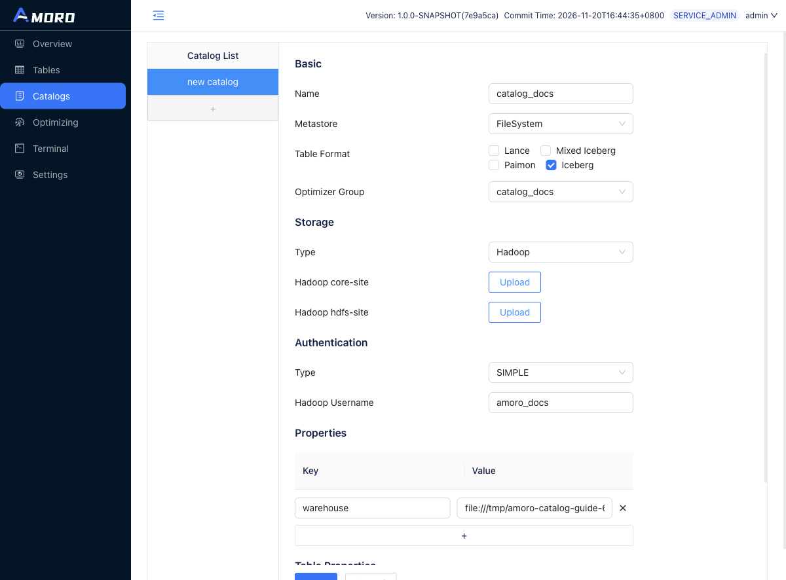
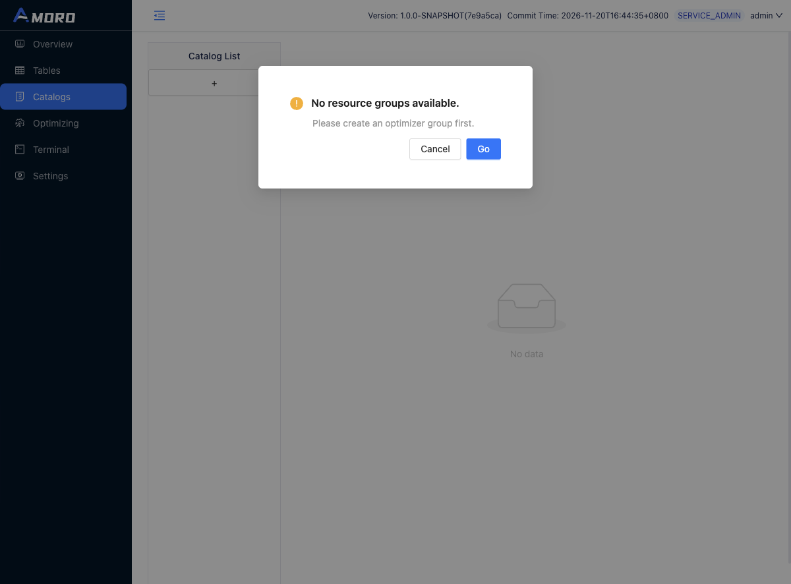
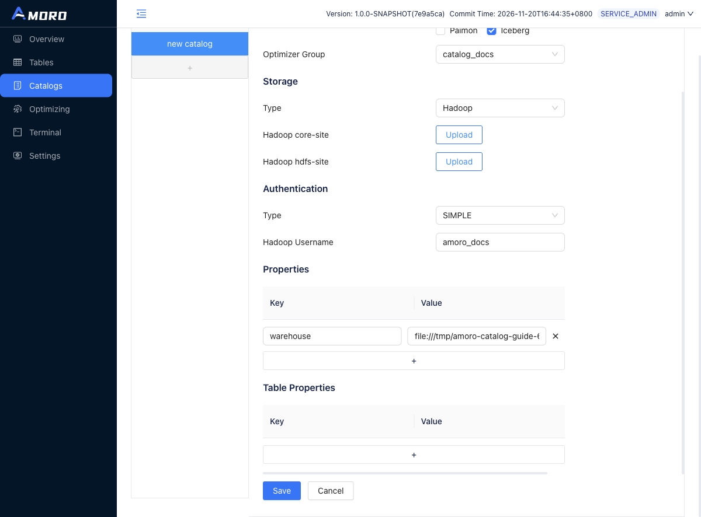
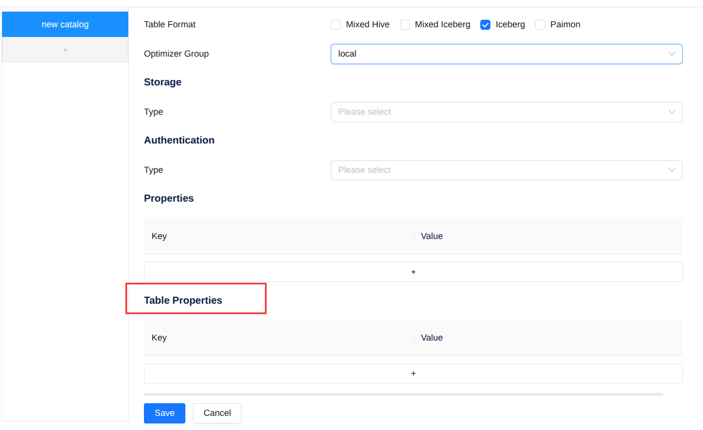
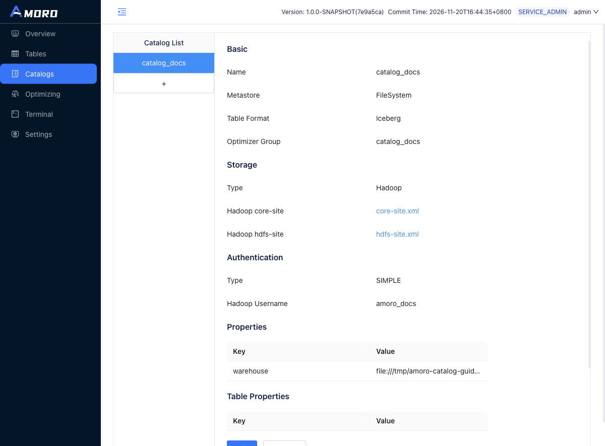
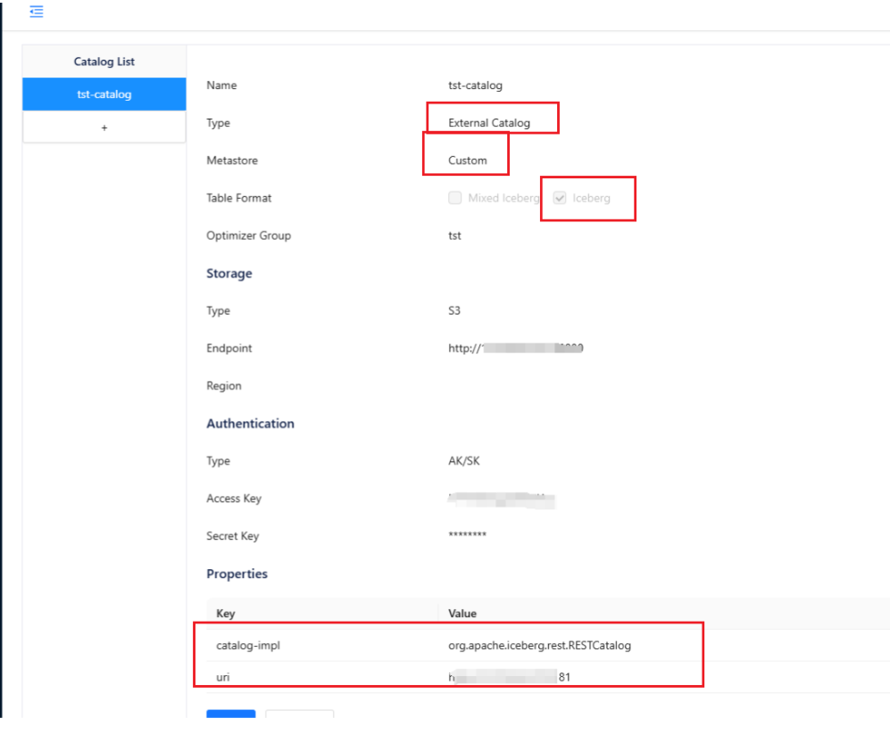
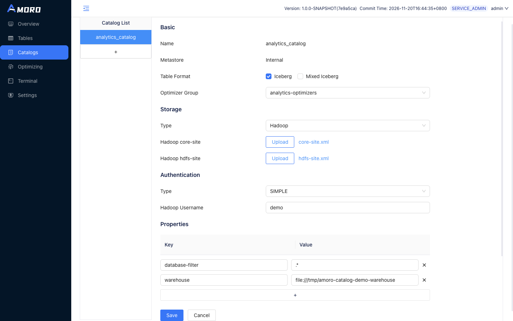

This documentation reflects the latest development version and may change before the next official release.
For the latest stable documentation, see 0.9.0-incubating.
Managing Catalogs
Users can import your test or online clusters through the catalog management function provided by the AMS Dashboard. Before adding a new Catalog, please read the following guidelines and select the appropriate creation according to your actual needs.
Create catalog
In Amoro, a catalog is a namespace that groups databases and tables. A table is uniquely identified by catalog.database.table. A catalog typically corresponds to a metadata service, such as Hive Metastore or the AMS itself.
Before creating a catalog, ensure an optimizer group exists. With role-based authorization, creating a catalog requires the MANAGE_CATALOG privilege.
Open Catalogs in the sidebar. On the Catalog List, click + to open the create form.

For example, enter catalog_docs as Name, choose FileSystem as
Metastore, leave only Iceberg selected under Table Format, and
select an existing Optimizer Group.
Configure basic information
- Name: catalog name. Only letters, digits, underscores, and hyphens are supported. It must start with a letter (lowercase recommended).
- Metastore: metadata storage backend. Options are Internal, Hive, FileSystem, Glue, REST, and Custom. See Formats Overview for supported combinations.
- Table Format: table formats supported under this catalog. Select one or more. When you change the metastore, the default selection may include multiple formats; clear formats you don’t need.
- Optimizer Group: group used for self-optimizing tables in this catalog. If no optimizer group exists, the dialog shows “No resource groups available. Please create an optimizer group first.” Click Go to navigate to Optimizing > Optimizer Groups. See Managing Optimizers for instructions.

Configure storage
Storage options depend on the selected metastore and table formats. For FileSystem with only Iceberg selected, choose Hadoop as the storage type.
- Type: storage type. Options include Hadoop, S3, OSS, and others depending on metastore and table formats.
- Hadoop core-site and Hadoop hdfs-site: XML configuration files for the Hadoop cluster. Upload them if you need to access a cluster; for a local demo, you can leave both empty. Use actual cluster files when connecting to a cluster.
- Hadoop hive-site: XML configuration file for Hive Metastore, shown when applicable.
- Endpoint and, where available, Region: connection settings for object storage.
Configure authentication
Authentication options depend on storage type. For Hadoop storage, choose SIMPLE or KERBEROS.
- Type: authentication method. For Hadoop, SIMPLE or KERBEROS.
- Hadoop Username: required for SIMPLE.
- Principal, Keytab, krb5: fields and file uploads for KERBEROS.
- Other storage types (e.g., S3, OSS) show different authentication fields such as Access Key and Secret Key.
Configure properties
In the Properties section, add catalog-level key-value properties. For this local example, set warehouse to an absolute file URI such as
file:///tmp/amoro-catalog-guide/warehouse, and use SIMPLE authentication
with a Hadoop Username, such as amoro_docs. The screenshots use a
disposable local directory.
A local file URI is suitable for a single-host demo. In a deployed environment, use a warehouse URI that AMS and the relevant engines and optimizers can access with the configured credentials.

Common properties include:
warehouse: required for Internal, FileSystem, and Glue catalogs. Determines where database and table files are placed.catalog-impl: required for Custom metastore. Put the custom catalog implementation jar in{AMORO_HOME}/liband restart the service.clients: Hive Metastore connection pool size. Default is 20. Requires restarting Amoro to take effect.database-filtermatches a regular expression against the full database name. For example,analyticsshows only theanalyticsdatabase.table-filtermatches a regular expression against the fulldatabase.tablename. For example,analytics[.]eventsshows only theeventstable in theanalyticsdatabase.
These filters apply to the AMS database and table lists for external catalogs. Internal catalogs display unfiltered lists. Leave a filter unset to list all entries of that kind in an external catalog.
Configure table properties
In the web UI for creating a catalog, there are two properties fields that serve different purposes:
- Properties adds catalog-level properties.
- Table Properties adds catalog-level table properties.

To apply the same table property to every table under a catalog, add it through the Table Properties field.
Adding table-level properties through the Properties field
table.. For example, to set the default self-optimizing.group for all tables under a catalog, you need to configure table.self-optimizing.group instead of self-optimizing.group. Keys without the table. prefix are not recognized as table-level defaults and are treated as catalog-level properties only.
For the full list of available table properties, see Table configurations.
Save and verify
After filling in the required fields, click Save. The catalog is created and the form switches to a read-only detail view showing the saved configuration.
In the Catalog List, the new catalog appears by name. To verify persistence, open Catalogs in the sidebar and check the list, or click the catalog to reopen its detail page.

The screenshots show the English dashboard in 1.0.0-SNAPSHOT at commit 7e9a5ca.
REST Catalog
When a user needs to create a Iceberg REST Catalog, they can choose External Catalog Type、Custom Metastore Type、Iceberg Table Format, configure properties include: catalog-impl=org.apache.iceberg.rest.RESTCatalog, uri=$restCatalog_uri.
After configuring the above parameters, the final result in the AMS frontend will look like this:

Nessie’s REST Catalog
When a user needs to create a Nessie Rest Catalog, they can also set catalog-impl=org.apache.iceberg.nessie.NessieCatalog on top of the above parameters.
Edit a catalog
In the AMS Dashboard, open Catalogs, select a catalog from the Catalog List, and click Edit. The Name and Metastore fields are read-only for an existing catalog. The available table formats and storage options depend on the metastore.

To change the catalog’s default optimizer group, choose an existing group in Optimizer Group. Click Save to apply the change. Click Cancel to discard unsaved changes and return to the saved configuration.
Delete catalog
When a user needs to delete a Catalog, they can go to the details page of the Catalog and click the Remove button at the bottom of the page to perform the deletion.